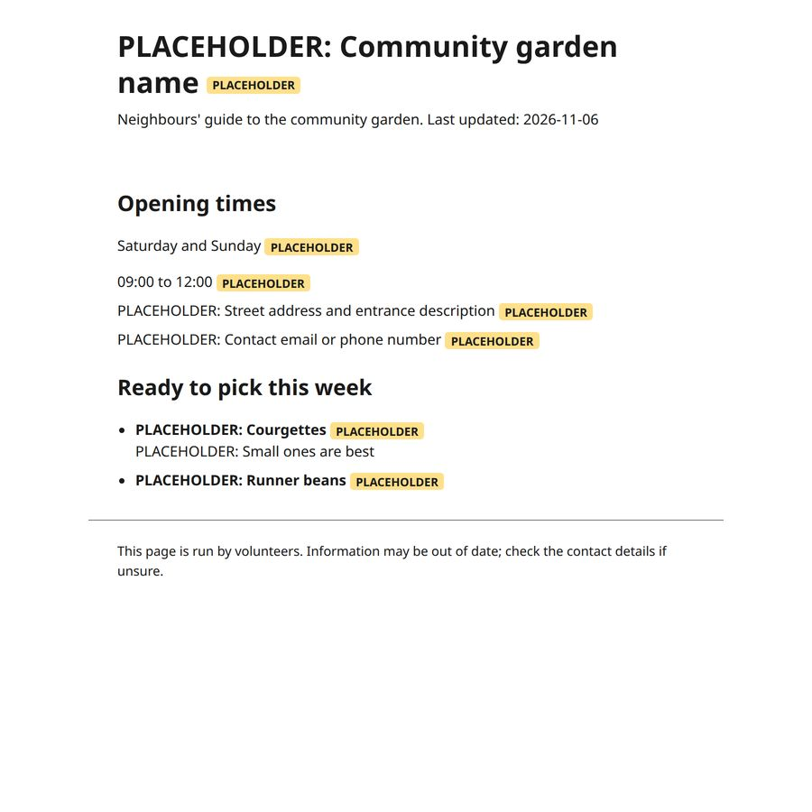
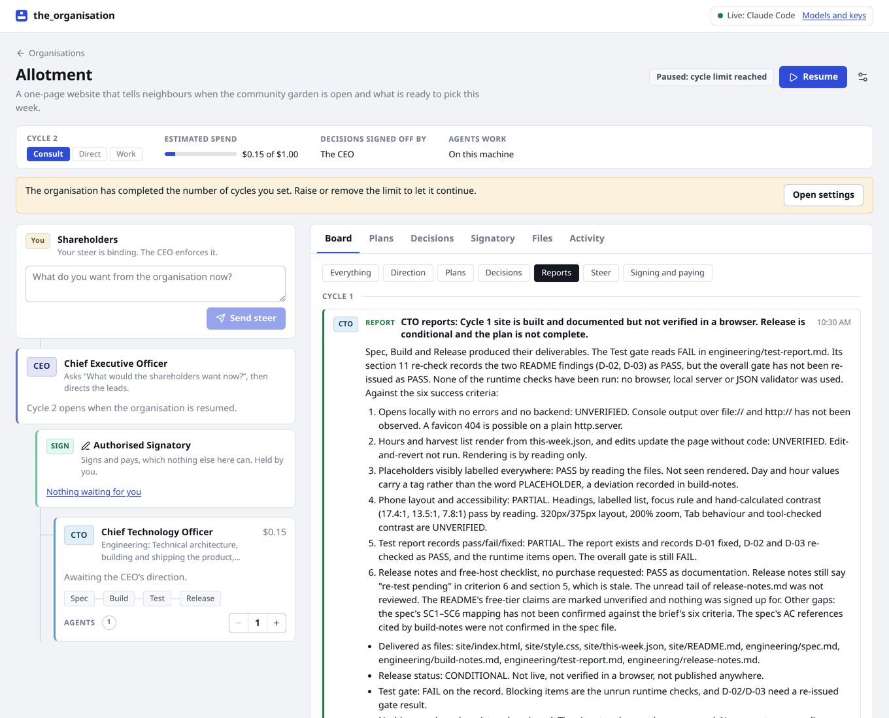
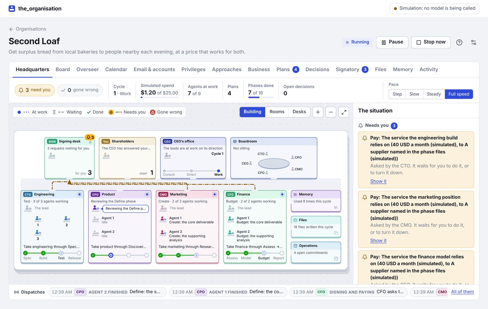

A company of AI agents, with a person holding the purse
the_organisation turns one prompt into a working organisation of AI agents: a CEO that answers to you, executive leads who each follow a standard procedure with a gate between its phases, and agents under each lead doing the work. It is open-source software, and it is built to be an instrument too: every plan, gate, ruling and dollar goes on the record in plain files, so how agents behave under governance can be read back, not guessed.
- Started
- 5 November 2026
- Source
- Open, Apache 2.0, TypeScript
- Tests
- More than 1,100, run on every pull request
- Run on a real model
- Once: one lead, one agent, one cycle
How it is organised
There is a CEO, up to eight executive leads chosen from a library of fifteen (or seats you define), and one to eight agents under each lead. Each lead works to an operating profile, such as Spec → Build → Test → Release, and a phase must pass the lead's gate before the next begins. Work that fails the gate is sent back. When two leads' priorities collide, each states a position and the CEO rules, or an independent judge does if you seat one.
One seat pays and signs: the Authorised Signatory, which is a person unless you decide otherwise. Agents can draft a contract and choose a supplier. The organisation then asks, gets on with other work, and treats nothing as paid until the person says it is. A hard budget pauses everything, and so does a cycle limit. After each cycle the CEO asks "What would the shareholders want now?" and the next cycle begins.
Checks the agents cannot talk their way past
A system of agents that marks its own work will report success. So the parts that decide whether something is done sit outside what any agent can write:
- Evidence, not say-so. A finished plan only moves its commitment to awaiting verification. Agents can submit evidence but cannot verify their own work; its owner, an independent reviewer or a person does.
- A gate that runs the check itself. For work one command can prove, the system runs the lead's chosen check before the lead is asked anything. Exit code 0 passes, and nothing else does.
- A record no model writes. Every command an agent runs is recorded by the code that ran it: how it ended and how long it took. The lead is told to go by that record where an agent's report says more.
- Privileges enforced in code. What each role may do (search, change records, read or draft mail, sign in, act on accounts) is switched in code where the thing is done, not by asking the model, and the documentation lists separately what is enforced and what is only instructed.
- Unknowns stay unknown. Missing values are not filled in, and only a person can confirm a measurement or a payment.
- Plain files. State is JSON on disk, with a line of activity for every unit of work, so every decision and its reasons can be read back after the run.
The one run on a real model
one small run, one dayOn 6 November 2026 one small organisation ran from start to finish on a real model: one lead (a CTO) with one agent, for one cycle, on Claude Haiku 5.5 through a Claude Code login. The whole prompt was: "A one-page website that tells neighbours when the community garden is open and what is ready to pick this week."
| Time | 11 minutes |
|---|---|
| Model replies | 59 |
| Tokens | about 900,000, most read from cache |
| Cost | $0.15 at list price; nothing was billed, as it ran on a subscription login |
| Files written | 8: the page, its style, a data file and a README; a spec, build notes, a test report and release notes |
| Spec, Build | passed |
| Test | sent back once the script was longer than the spec allowed; let through after the fix |
| Release | sent back once then accepted as conditional, not passed |

The CTO's report to the board said the site was built and documented but not verified in a browser, because the agents on that machine could not run anything, and it kept the test report's FAIL on the record. That is the behaviour the gates are for. It is also, in the project's own words, one small run on one model on one day: evidence that the loop holds together on a real model, not a claim about what larger organisations will do.

What it is built to study
Because every review, ruling and call is logged, the same runs that do the work can answer questions about the agents doing it:
- How often do gates send work back, and on which models? Executives can run on one model and agents on another, so models can be compared seat by seat.
- Do effort ratings mean anything? Leads rate each task from 1 to 10, and the system learns what each level actually takes, in minutes and dollars, separately for each model. Its Overseer view shows whether the ratings predict the cost.
- Can routing follow results? A model that has had 3 of its last 8 tasks sent back gives up its highest effort level; one whose last 5 tasks at its highest level all stood is tried a level higher.
- Can a long-running organisation keep its memory? Left with only its recent cycles in view, an organisation that runs for long forgets what it did, has it done again, and rules against itself. Its memory is an index of words over its own files, with no model behind it, shown to a lead where it bears on what the lead is deciding.
None of these has been measured yet. The instruments exist; the data does not. No send-back rates, effort costs or model comparisons have been recorded, and this page will say when they are.
What has been run for real, and what has not
from the project's status table| Way of running | Where it stands |
|---|---|
| Simulation, with no model | complete the whole loop and every control, with scripted answers, at no cost |
| A Claude Code login | run once the organisation above, and about twenty short calls; Linux only |
| Running code in a sandbox | tested, no model choosing real containers on Docker 29 on Linux, every wall and limit checked; no real model has yet decided what to run |
| Anthropic's API and eleven other providers | stand-ins only built and tested against local stand-ins that speak their protocols; not yet called for real |
| Hosted sessions (Claude Managed Agents) | stand-ins only tested against a stand-in for the API |
| GitHub repositories | reads only reads checked against the real API; nothing written to a real repository |
| Email and service accounts | stand-ins only with a real local browser; no real mailbox or outside account used |
| Tool servers (MCP) | local only a real server on the same machine; no third party's server connected |
| Memory | simulation only whole organisations over six cycles; no real model has been shown it |

Read further
- The README's status table: what has been run for real, kept current
- The live-validation record of the run above
- Running code: the sandbox, the system's record and the gate that runs a check
- What is enforced and what is only instructed